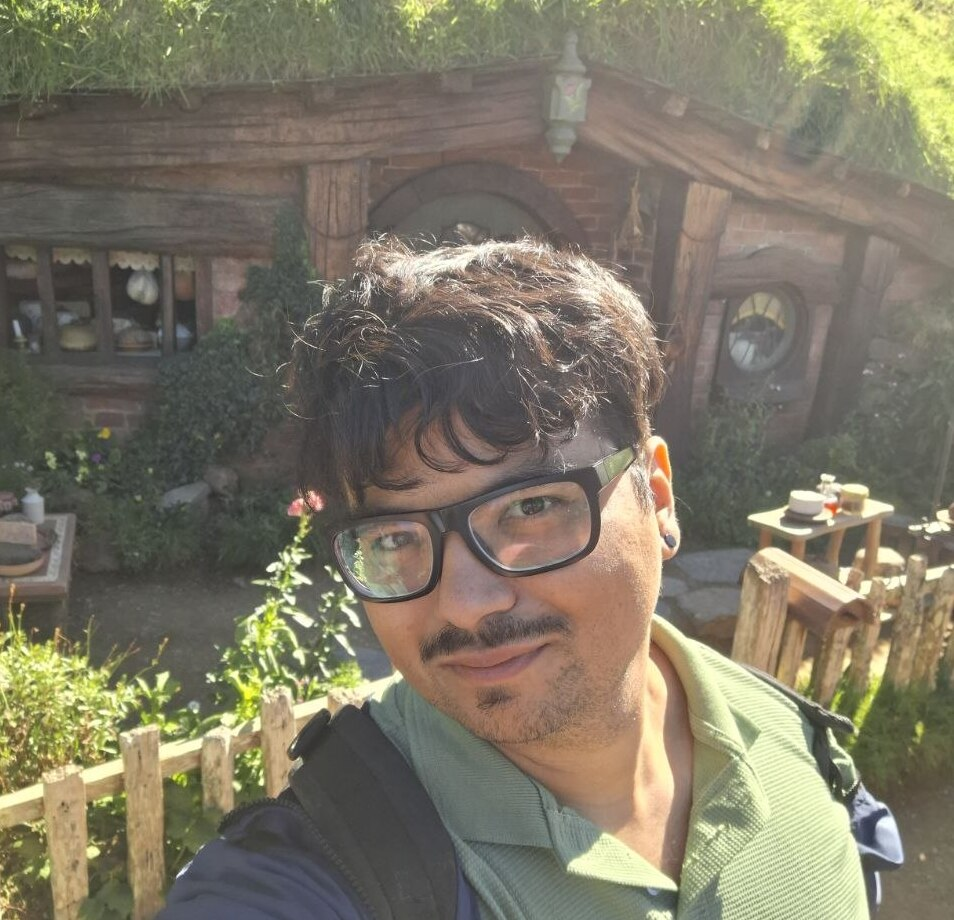

Breno Livio Silva de Almeida — Computational Biologist

I am a double-degree PhD student at the Institute of Mathematics and Computer Sciences (ICMC) of the University of São Paulo (USP) and the University of Leipzig. My thesis, Decoding the Language of Life: Towards the Limits of Biological Sequence Representation, investigates how DNA and protein sequences can be represented for alignment-free machine learning, what biological information different representations capture, and where their limits lie. My work spans handcrafted biological descriptors, foundation models, automated machine learning, and environmental metagenomics, with an emphasis on making robust computational methods more accessible. My research is funded by the São Paulo Research Foundation (FAPESP), process #2024/10958-1, and the Google PhD Fellowship in Health Research.
As part of my doctoral research, I spent one year as a Research Assistant at the Helmholtz Centre for Environmental Research (UFZ) in the Microbial Data Science Group headed by Dr. Ulisses da Rocha (Department of Computational Biology and Chemistry). There, I applied my PhD research to microbial systems and large-scale environmental data, working on protein-function discovery and tools for the reproducible deposition of metagenome-assembled genomes and their metadata.
Before my PhD, I completed my BSc Degree in Computer Science at the ICMC-USP, where I first explored machine-learning applications in bioinformatics. During this time, I had the privilege of working under the guidance of Prof. Dr. André de Carvalho, who played a pivotal role in shaping my research interests. Now, as a PhD student, I am fortunate to continue this academic journey with him as one of my co-advisors, alongside Prof. Dr. Peter Stadler from the University of Leipzig.
Research Interests
Since high school, when I developed a simple chatbot to assist in interventions for autistic people, I have been passionate about leveraging computer science for social good. This commitment continued in college, where my fascination with biology and nutrition inspired me to study on my own the link between complex disorders, such as autism spectrum disorder and bipolar disorder, and the human gut microbiome through the interdisciplinary lens of machine learning and bioinformatics (and, interestingly, discovered that I was on the spectrum myself at the beginning of my PhD).
Since 2021, I have been continuing to work on computer science for social good by employing methods for democratizing machine learning, such as using automated machine learning (AutoML), which can help non-experts to use machine learning.
My current research interests, in a more technical version:
My research centers on a representation problem: how much biologically relevant information can alignment-free methods recover from a DNA or protein sequence, and what remains beyond their reach? I compare handcrafted descriptors, which encode explicit compositional, physicochemical, and mathematical properties, with embeddings learned by foundation models, which capture higher-order patterns from large sequence collections. I study what each representation encodes, where it fails, and how its usefulness changes across datasets and evolutionary distances.
I use automated machine learning to select representations and predictive models for individual biological tasks, reducing the expertise and resources required to apply these methods. I also use protein language models and hierarchical classification to investigate functional dark matter in environmental metagenomes, while developing infrastructure for the reproducible public deposition of the underlying genomes and ecological metadata. Ultimately, I want to understand the representational limits of sequence-based prediction and when additional context or experimental validation is needed.
Now, in a less technical version that I could explain to my mom and impress her:
Proteins are molecules that perform many essential functions in humans, other organisms, and throughout the environment. However, many proteins still have no known function. Researchers sometimes call these uncharacterized proteins "functional dark matter" (although some are pretty much against using the term "dark matter").
The usual way to infer a protein's function is to compare its sequence with proteins we already understand. This works well for close matches, but it can miss proteins that have changed greatly through evolution. To a comparison tool, these proteins may look unrelated even when they share structural or functional properties.
My thesis asks how we can translate a biological sequence into information a computer can learn from. One option is to describe properties that scientists already know how to measure, such as composition and physicochemical characteristics. Another is to use language models that learn patterns from millions of sequences, much as language models learn relationships among words. Neither view captures everything, so I investigate what each one reveals and where each one stops being reliable.
Awards and Recognition
HIDA-Sponsored Participant – The Carpentries Instructor Training: Selected in 2026 for one of 15 annually sponsored training places offered by the Helmholtz Information & Data Science Academy (HIDA) to Helmholtz researchers. The program provides evidence-based training in scientific and data science instruction and leads toward certification as a Carpentries Instructor.
ISME Scholar Mobility Fund: Awarded in 2025 with €2,300 in funding for a research period in July 2026 at the Helmholtz Centre for Environmental Research (UFZ) in Leipzig, Germany.
Google PhD Fellowship: Received the 2025 Google Latin America PhD Fellowship in Health. The Google PhD Fellowship Program was created to recognize outstanding graduate students doing exceptional and innovative research in areas relevant to computer science and related fields. Find all the fellows here: Google PhD Fellowship 2025 recipients.
J. F. Marar Artificial Intelligence Prize for Undergraduate Research: Winner project "BioDeepFuse: Empowering Researchers in Life Sciences with Deep Learning". Project was selected winner considering criteria such as academic and social relevance, adherence to the United Nations' Sustainable Development Goals (SDGs), and academic performance. More details in Portuguese here: News shared by the University of São Paulo.
Prototypes for Humanity: BioAutoML was selected by Prototypes for Humanity as one of the top 100 projects from nearly 3,000 applications submitted by graduates from over 100 countries. The project received funding for participation and was presented at the international festival in Dubai. More information is available at: BioAutoML on the event website.